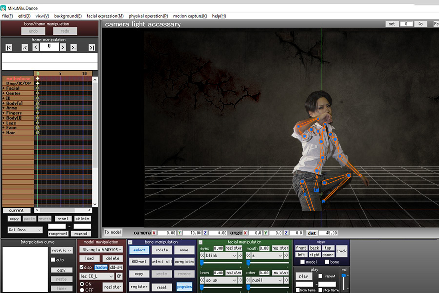

So there it is! That's my final project for the Photoshop section!
My goal was going to make the bones of the model which I used for my videos. I use that program almost everyday, so I thought it could be cool if I rig myself into a 3D model.
I was almost reached my goal. I don’t have many photos because I’m not the person who has a lot of selfies. The photo which I selected was taken by November 26, 2014. It’s hard to find a full body shot for my little thought, and the details of the background and the model name I changed are hard to find out. I think the main reason is I don’t have enough skill to reach it, I still need to learn.